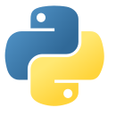
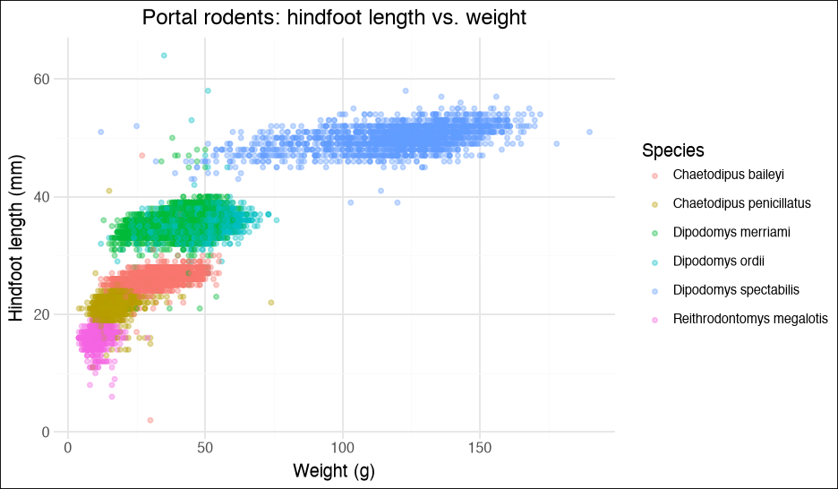
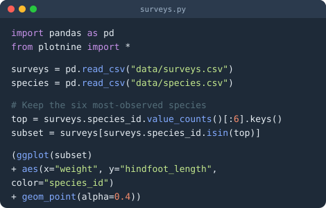
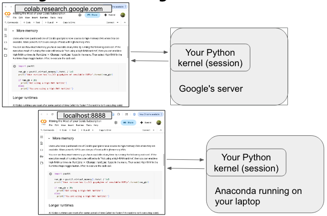
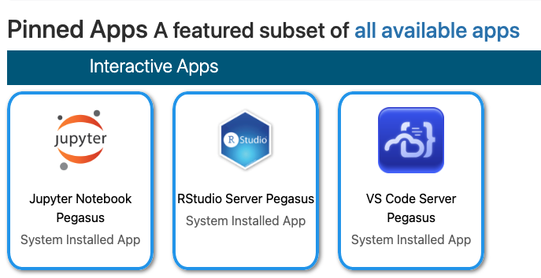

Python in Half a DayAn introductory, hands-on Python workshop
Dan Kerchner · George Washington University Libraries & Academic Innovation · Fall 2026


Python camp is a mini-course that will earn you a certificate of completion.
Dates:
Apply by September 21 using the application form link at gwu-libraries.github.io/python-camp
📅 Find all GW Libraries workshops and events at library.gwu.edu/events
NaN, a wrong merge. Only someone who reads code catches that.🤖 Think of AI as a fast, confident, occasionally wrong assistant. It writes the code — you are still the analyst. Use AI to improve your coding skills!
By the end of this workshop, you will be able to:
int, float, str, bool)for and while loops; make decisions with if / elif / elsedef💡 Python is both a language you write and an ecosystem of libraries (pandas, numpy, matplotlib, scikit-learn, …) and a famously welcoming community.
pandas makes cleaning, reshaping, and transforming messy data intuitiveBoth are free, open-source, and excellent for data work — they just have different centers of gravity:
| Reach for Python when… | Reach for R when… | |
|---|---|---|
| The task | Machine learning / AI, automation, web apps, working with text or files at scale | Statistical analysis, exploring & visualizing data, writing up results |
| Strengths | General-purpose language; deep learning (PyTorch, TensorFlow); huge ecosystem beyond data | Built for statistics; ggplot2 graphics; tidyverse; R Markdown/Quarto reports |
| Your field | Common in computer science, engineering, physics, industry data science | Common in statistics, biostatistics, epidemiology, ecology, social sciences |
| New methods | Cutting-edge ML/AI methods often land in Python first | Cutting-edge statistical methods often land in R first |
🤝 It’s not a rivalry — many researchers use both, and tools like Quarto and Positron support the two side by side. The best first language is the one your field and collaborators use.
| Tool | Type | What it is |
|---|---|---|
| Google Colab | In browser | Jupyter notebooks hosted by Google — nothing to install; free tier (GW folks can get Colab Pro) |
| Jupyter Notebook / JupyterLab | In browser, runs locally | The classic notebook interface: text + code + output in one document |
| VS Code | Desktop app | Popular, free general-purpose editor — excellent Python & notebook support via extensions |
| Positron | Desktop app | Posit’s free next-generation data-science IDE for Python and R, built on VS Code |
| Spyder | Desktop app | Free, scientific IDE that feels like RStudio / MATLAB; ships with Anaconda |
| PyCharm | Desktop app | Full-featured professional Python IDE (free Community edition, but get the educational license for PyCharm Professional) |
🖥️ Today we’ll use Google Colab — open the notebook link, sign in, and you’re coding.
| Tool | 👍 Pros | 👎 Cons |
|---|---|---|
| Google Colab | No install; free GPUs; easy to share like a Google Doc | Needs a Google account & Internet; sessions time out; your files live in Google Drive |
| Jupyter / JupyterLab | Same notebook format, on your own machine; your data stays local | You install and manage Python + packages yourself |
| VS Code | One editor for many languages; notebooks and scripts; huge extension ecosystem | More setup; general-purpose, so less tailored for data work |
| Positron | Built on VS Code but tailored for data work with Python and R; great Data Explorer | Newer, so still maturing |
| Spyder / PyCharm | Full-featured desktop IDEs | Heavier; less notebook-centric |
🎯 We’re using Google Colab today, but you may want to try Positron or VS Code later.

A notebook is a sequence of cells: some hold text (Markdown), some hold code.
| Action | How |
|---|---|
| Run the current cell | Shift + Enter (or the ▶ Play button) |
| Run the cell and insert a new one below | Alt + Enter |
| Add a code cell | + Code button (Colab) / B in command mode (Jupyter) |
| See more shortcuts | Tools → Keyboard shortcuts (Colab) |
print() needed🔁 Need a fresh start? Runtime → Restart and run the cells top-to-bottom.
Assign values with =:
name = "Lou" # str (text, in single or double quotes)
year = 1972 # int (whole number)
gdp = 22.38 # float (decimal number)
casual = True # bool (True / False -- capitalized!)
year + 10 # use a variable by name
#> 1982
type(gdp) # ask Python what type something is
#> <class 'float'>_. Can’t start with a number; no spaces.Year and year are different!name * 4 repeats the text; name + 2 is an errorExpressions that evaluate to True or False:
year = 1972
year == 1972 # equal to -> True
year != 2020 # not equal to -> True
year > 1980 # greater than -> False
year <= 1975 # less than or equal -> True
1970 < year < 1980 # chained comparison -> True
# Combine with and, or, not
year > 1970 and year < 1980 # -> True
not (year == 1972) # -> False⚠️ == compares; = assigns. Mixing them up is everyone’s first bug.
An ordered sequence of values, in square brackets:
countries = ['Canada', 'Mexico', 'Italy', 'Cameroon', 'Jamaica']
countries[0] # 'Canada' -- the FIRST item is index 0!
countries[-1] # 'Jamaica' -- negative counts from the end
countries[1:3] # ['Mexico', 'Italy'] -- slice: start up to (not including) stop
countries[:2] # first two; countries[3:] -> from index 3 to the end
len(countries) # 5
countries.append('Nepal') # add to the end (changes the list)
countries + ['Egypt', 'Peru'] # combine lists (makes a new list)
'Italy' in countries # True[3, True, 'xyz', [1, 2]] · Strings are list-like too: name[0]🔢 Python counts from 0 — R counts from 1. Watch out if you switch!
Tuple — like a list, but can’t be changed
Use for things that shouldn’t change — coordinates, an (x, y) pair, a fixed set of options.
[ ] list |
( ) tuple |
{ } set |
|
|---|---|---|---|
| Ordered? | ✅ | ✅ | ❌ |
| Changeable? | ✅ | ❌ | ✅ |
| Duplicates? | ✅ | ✅ | ❌ |
Pairs of keys and values, in curly braces:
workshop = {'name': 'Python in Half a Day',
'duration': 4,
'instructors': ['Dan', 'Laura'],
'awesome': True}
workshop['instructors'] # look up by key -> ['Dan', 'Laura']
workshop['location'] = 'Gelman' # add a new key
workshop['duration'] = 3.5 # replace a value
'location' in workshop # True (checks the KEYS)
workshop.keys(); workshop.values(); workshop.items()year = 1959 # a single value
songs = ["So What", "Blue in Green", "All Blues"] # a list: many values
tracks = [1, 3, 4]
album = pandas.DataFrame({"song": songs, "track": tracks}) # a tableValue · 1 × 1
| year |
|---|
| 1959 |
a single value
→
List · 1 × n
| tracks |
|---|
| 1 |
| 3 |
| 4 |
many values, in order
→
DataFrame · m × n
| song | track |
|---|---|
| So What | 1 |
| Blue in Green | 3 |
| All Blues | 4 |
columns are equal-length Series
* DataFrame is a pandas/polars class, so you need to import pandas or polars
# A comment starts with # -- Python ignores it; it's for the reader
scores = [70, 90, 81, 93] # comments can follow code, too
for s in scores:
print(s) # indented: INSIDE the loop
print("still inside")
print("done") # not indented: OUTSIDE the loopif, or a function:)for, while, if, else, and def line ends with a :💬 Comment the why, not the what, for your future self or other collaborators.
for LoopsRepeat a block of code once for each item in a list (or any “iterable”):
scores = [70, 90, 81, 93, 77]
top = max(scores)
for s in scores:
curved = round(100 * s / top, ndigits=1)
print("Score:", s, "-> curved:", curved)
# Loop over a dictionary's key/value pairs
for key, value in workshop.items():
print(key, "=", value)
# Loop over a range of numbers: 0, 1, 2, 3, 4
for i in range(5): # range(2, 5) would yield 2, 3, 4
print(i)while LoopsRepeat while a condition is True:
import random
total = 0
while total < 50:
total = total + random.randint(1, 10)
print("Total so far:", total)
# `while True` runs forever... until `break`
while True:
n = random.randint(1, 10)
if n == 7:
print("Lucky 7!")
break🎲 Random numbers differ every run. For a repeatable sequence, call random.seed(42) first (choose any number you like).
if / elif / elseRun a block of code only when a condition is True:
scores = [61, 95, 70, 80, 85, 99]
for s in scores:
if s >= 90:
print(s, "is an A")
elif s >= 70:
print(s, "is a Pass")
else:
print(s, "is a Fail")elif = “else if” — check as many conditions as you like, in orderelse catches everything left overPackage up code you want to reuse, with def:
def fahrenheit_to_celsius(temp_f):
"""Convert a temperature from °F to °C."""
temp_c = (temp_f - 32) * 5 / 9
return temp_c
fahrenheit_to_celsius(100) # 37.777...
def curve(score, top_score):
return 100 * score / top_score
curve(89, 96) # arguments matched by position
curve(top_score=96, score=89) # ...or by name, in any orderdef name, parameters in parentheses, :, indented bodyreturn sends a value back to whoever called the functionPython’s built-in functions (print, len, max, type, …) are just the start:
sqrt(25) # NameError -- Python doesn't know sqrt() yet!
import math # load the built-in math library...
math.sqrt(25) # ...then call it as library.function
from math import sqrt # or import just one function
sqrt(25) # now no prefix is needed
import pandas as pd # import with a short nickname (convention!)
pd.read_csv("data.csv")math, random, datetime, os, …) ships with Pythonpandas, numpy, matplotlib, …) are installed separately — Colab has the popular ones pre-installed# In a terminal (or a notebook cell prefixed with !)
pip install pandas plotnine
# Or, with Anaconda / Miniconda / Miniforge:
conda install pandas plotnine!pip install name in a cellhelp(round) # built-in function
help(random.randint) # a function from a library
help(pd.DataFrame.merge) # a method from pandas
round? # notebook shortcut: same thing, in a pop-up
surveys_df.<TAB> # Tab-completion lists what's availableTwo ways to write your analysis — both are real, reproducible code:
| 👍 Pros | 👎 Cons | |
|---|---|---|
Notebook (.ipynb) |
Narrative + code + results in one shareable document; great for exploring, teaching, and reports; renders on GitHub | Easy to run cells out of order and end up with hidden state; awkward for version control (git); not ideal for automation |
Script (.py) |
Simple — just code; runs top-to-bottom with python analysis.py; easy to reuse (import), automate, and run unattended on an HPC cluster |
Explaining why is limited to # comments; results go to files (CSV, PNG, …) rather than appearing inline |
As a project grows, its code moves into scripts: serious software — larger programs, packages, web apps — is built as multiple .py files that import from one another. Every Python library you’ll ever import is written this way.
🎯 Rule of thumb: notebooks to explore and to tell the story; scripts for reusable building blocks, automation, and multi-file software. Many projects use both — and Quarto lets a notebook become a polished report.
data/surveys.csv)#) and use Markdown cells to explain your thinkingsurveys_2024, not df2venv, conda) — so package versions don’t collidegit early, even just to keep a history of your own work, but also to collaborateThese should be on your to-do list:
conda env or venv per project keeps package versions from collidinggit / GitHub and start using it with your Python projectsbash “shell” and use it in the TerminalGW HPC “Open On Demand” ood.arc.gwu.edu — includes JupyterLab

*HPC = High Performance Computing
.qmd file (or use your existing .ipynb!) → Render → Quarto runs your code and weaves the text, code, and results (tables, plots) together😎 These very slides are a Quarto presentation — written in plain text, styled with a theme, published free on GitHub Pages.
Dan Kerchner | George Washington University Libraries
kerchner@gwu.edu | calendly.com/kerchner
Appointments:
| Academic Commons Data Consultants | Python, R, Statistics, SAS, Excel, STATA, etc. | go.gwu.edu/DataConsulting |
| LAI Software developers | Python, R, HTML/JS/CSS | calendly.com/gwul-coding |
Workshops: library.gwu.edu/events
Notebooks: github.com/kerchner/half-day-python (notebooks folder)
These slides: kerchner.github.io/half-day-python
Also! GW Coders | Slack, bi-weekly events, and networking gwcoders.github.io
Python in Half a Day · GW Libraries & Academic Innovation · kerchner.github.io/half-day-python